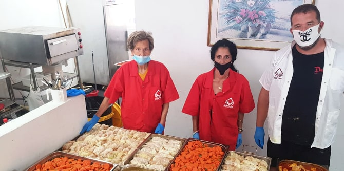
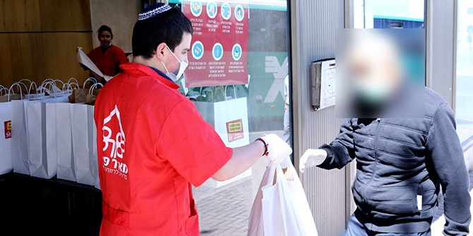

Since 2000, Meir Panim’s nationwide network of free restaurants has been welcoming underprivileged people from all sectors of Israeli society. The free meals are served in a warm restaurant-like atmosphere, ensuring respect for each person's dignity and autonomy.
Eighteen years ago,
Nisim Elmakayes, a graduate of the Mandel Program for Local Leadership in Yeruham and Ramat Hanegev (September 2016 – July 2018), founded the Dimona-Yeruham branch of Meir Panim. Nisim is also a social activist, involved in several social engagement forums. He set up a club for Holocaust survivors in Dimona, established the Parent Patrols in Yeruham and runs charitable second-hand goods depots in Yeruham and Dimona.
Operated in cooperation with the city’s welfare department, the Meir Panim free restaurant in Dimona normally employs 13 workers (three salaried employees and 10 volunteers), providing some 500 servings of food to needy individuals each day. In 2019, the Dimona-Yeruham branch reached a new record in its activities in the region, distributing thousands of hot meals, giving out hundreds of vouchers for purchasing food, delivering hundreds of food baskets, hosting a large, public Passover Seder and organizing Birthright participants to volunteer on a weekly basis.

With the onset of the coronavirus crisis in Israel, almost all of Meir Panim's activities were suddenly halted, just when they were needed most. This was accompanied by a sudden drop in vital private donations made primarily by local residents, who were now fearful of the economic downturn.
At the same time, Meir Panim was aware of the increasing number of unemployed people, which rose nationally from 4% to 26% during the first weeks of the crisis. Unemployment benefits were also often slow to arrive.
To assist Meir Panim in resuming their charitable work as quickly as possible, the Mandel Foundation provided support that enabled Nisim to launch an initiative of recruiting about 15 disadvantaged youth from Dimona and Yeruham as volunteers to help the elderly members of the community. These local young people offered daily social and other essential support to the elderly, talking to them and taking care of their basic needs. This included delivering food and cooked meals to them, as well as assisting the few seniors who own smart phones to connect to the outside world remotely.
In exchange for their valuable help and once the situation allows, the youth will participate in a "Chefs Workshop" where they will receive professional training to become chef's assistants. Upon completing the workshop, the volunteers, none of whom have a high school diploma, will receive a certificate that is recognized by the Ministry of Trade and Industry, which will help them to integrate into the challenging employment market. The workshop will provide the youth with a sense of real accomplishment, as well as dignity and hope for the future. The venture is being conducted in partnership with the Dimona Municipality, which will provide a suitable setting for the workshop and all the necessary food items for it. The classes will be conducted on Thursdays, which will enable the participants to take the meals they have prepared home to their families to enjoy on Shabbat.

The initiative has a number of overall objectives: The speedy resumption of the organization's activities; outreach to isolated elderly in the community; empowering youth by helping them create a better future for themselves; and building a new base of young volunteers.
In order to adapt to the newly imposed health and safety regulations, Meir Panim had to change three aspects of its work during the crisis: All of the free restaurants were transformed into centers for take-out meals; the meals-on-wheels delivery service was expanded; and food preparation was done on the premises. Until the crisis, Meir Panim had been the beneficiary of donated surplus food from hotels and event halls, which enabled the organization to serve food which would otherwise have gone to waste. When hotels and event halls were shuttered, however, Meir Panim decided to cater the food themselves, in order to continue providing for Israel's most vulnerable citizens during this difficult time.
As the restrictions have begun to relax and Israel is returning, somewhat cautiously, to a new "normal" way of life, the Meir Panim centers are again opening up for people to eat together in their free restaurants, as long as they maintain the necessary social distancing and hygiene regulations.
Currently, the Dimona-Yeruham branch of Meir Panim serves the underprivileged populations in the Yeruham area with meal and food delivery only, as well as by maintaining a small local warehouse for distributing fresh produce. However, in the near future, Nisim plans to open an official branch of Meir Panim in Yeruham itself, and has already found a building to transform into a free restaurant.
Photos courtesy of Meir Panim.
{kind=link}
{kind=link}